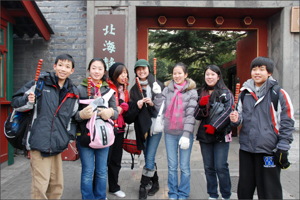

iTalkBB中国寻根之旅实录将在凤凰卫视首播
(美国弗吉尼亚州维也纳讯)
随着中国经济力量与国际地位的提升，今日华裔子弟在美国长大的生活要比数十年前改变了许多。
华裔家长平时很努力地灌注中华文化与语言到他们孩子的身上。然而，孩子一旦踏出家们，整个英语环境为孩子们学习他们本身的根源文化形成了一定的困难。如何能够让华裔孩子正确地认知中美不同的文化，对自己有一个正确的定位，接着从这种特殊的生长环境中真正地得益，成为了家长们的一个难题。
周末提供课程的中文学校在全美各地越来越多，其中全美中文学校协会(CSAUS) 拥有来自横跨全国42州，三百多个会员学校，超过6万名学生，以及5千位老师。很多华裔家长选择了让他们的孩子进入这样的语言学校学习中文。但是要更加全面地了解中华文化，单纯地学习语言是不够的。
去年，全美中文学校协会和企业赞助商iTalkBB家庭电话所举办的全美青少年中文作文比赛，提供8位在美国长大的华裔学生一趟由iTalkBB全额赞助的中国寻根之旅。其中有6位得奖学生是由五位分别来自于全美中文学校协会、iTalkBB、及三家享有盛名的中文媒体-北美新浪、美国凤凰卫视，与世界日报的评审委员。其它的2位学生则是经由民众在其主题网站上投票选出的。
"我们想提供这些华裔年轻人一个以写作来表现自己的机会，我们知道这趟去中国的寻根之旅，可以真正地改变他们对自己身为一个华裔美国人的看法"，iTalkBB首席执行官赵捷指出。
孩子们可能常听见家长们谈论身为一个中国人的重要性，除非他们亲身经历，他们是很难去了解的。
以下是参加iTalkBB中国寻根之旅的八位孩子在中国的日记精选，从中，希望可以让广大的读者了解孩子们在中国的真实感受。
爸爸妈妈的话忽然从脑海中冒出来："你有了这个机会回国，一定要好好的去寻根，去深刻地感受中国文化。"可我一直不懂该怎么样去体会那种感觉……我从小到大只知道坐飞机能够去一个叫中国的国家，但我这次的寻根也许可以明白爸爸妈妈话里隐藏着的意义，还有理解他们心里念着家的负担。(12/26/08 - 汤简)
在七天内，遇见了很多不同的人，遇见了很多不同的事情，也学到了不少从没听说过的中国历史以及文化。这次的寻根之旅让这一个寒假变成最有意义的一个寒假。(1/1/09 - 林瑶)
更多日记内容请上 www.2008HeritageTour.com 阅读。
凤凰卫视在3月22日和3月29日太平洋时间的下午6点25分 (东部时间9点25分) 将分成上下两集，分别播出这8位学生参访四川大地震后新建学校的精采片段。记得带上您的孩子一起观看！
关于全美中文学校协会：
全美中文学校协会是 (501) (C) (3)的非营利组织。此协会的目的在于强化美国中文学校间的合作，并推广中文以及中华文化的教育，以及加强中国与美国间文化的合作及交流。
关于 iTalkBB：
iTalkBB新电信是享誉全美的优秀通讯品牌，是国际电讯行业的领导和先驱。其以顶级全球网络和前沿技术为依托，以最具竞争力的价格为客户提供高质、清晰的本 地、国内及国际长途电话服务，以及高清中文电视直播、回播与点播服务。其电话业务能完全取代传统家庭电话，并享受多重免费提供的附加功能如来电等待、三方通 话、来电显示、呼叫转移等。另有独一无二的功能——中国大陆、台湾、香港、南韩当地号码，当地亲友只要拨打此号码，就能接通到在美国的亲友，而无需支付国际 长途费用 。iTalkBB的高清中文电视服务，自问世以来便受到了广泛的好评和欢迎。超过五十个热门频道支持实时直播与48小时回看，海量最新电影电视剧综艺节目免 费无限点播，让用户以最低价格尽享华语娱乐。iTalkBB新电信将不断努力，与您共同成就更美好的生活。iTalkBB设有24小时中英文的客户服务热线: 1-877-482- 5522和官方网站www.iTalkBB.com，一年365天提供不间断的服务与更多信息的查询。